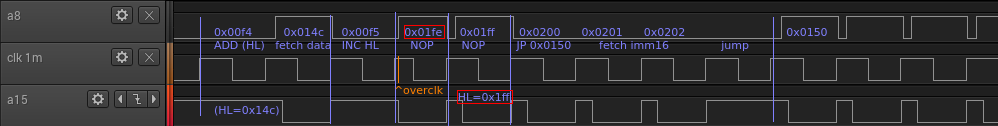
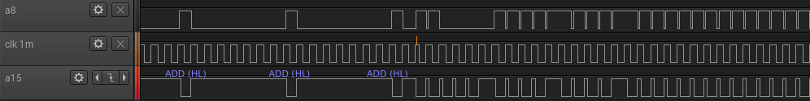

This work is licensed under a Creative Commons Attribution-ShareAlike 4.0 International License.
I tried to reproduce on my DMG-CPU B what Costis did to his Super GameBoy:
https://www.its.caltech.edu/~costis/sgb_hack/
I connected my FPGA to pin 74 of the DMG, which I figured out to be the input of the amplifier of the oscillator circuit. I overclocked all clock ticks of the "LD ($FF00+$50),A" instruction with 24 MHz, each one individually and later all at once in a burst, but I had no success in preventing the write operation from taking place. In another try I also included the instructions directly before and after the LD, even went up to 36 MHz. I also tried slower clocks, because I thought, maybe I'm too fast. But still no success.
Then I was thinking that maybe I'm at the wrong clock pin. Maybe I need to connect to pin 73, the output of the amplifier. Maybe the GameBoy draws its clock from there and I need to force it onto the output, because maybe the fast clock pulses get swallowed by the amplifier in between. Oddly, that worked! Needs to be more than 24 MHz, though. I succeded with 30 and 36 MHz. But it turned out later that my reasoning and my conclusions where totally wrong. It turned out that the field of the wire I connected to pin 73 was propagating onto the loose wire I had connected to pin 74. This weak signal was enough for the GameBoy to get clocked. But it also picked up some additional pulses, which I did not intend, and therefore my counting was off. It worked, because I didn't overclock the LD instruction, but the INC HL instead!
So I tried the input again (pin 74) and adjusted the offset to still target the increment instruction and it worked. I was able to pin point it down to one single clock tick within the INC HL instruction. The first tick of the second machine cycle needs to be overclocked at 30 or 36 MHz:
___________________ _____________ ___
clk 1mhz ___| |___________________| |___________________|
____ ____ ____ ____ _ ____ ____ ____ ___
clk 4mhz ___| |____| |____| |____| |____| |_| |____| |____| |____|
cycle |<------------- 1st cycle ------------->|<--------- 2nd cycle ----------->|
tick < 1 > < 2 > < 3 > < 4 > <1> < 2 > < 3 > < 4 >
| INC HL |
| instruction fetch | additional cycle for 16 bit op. |
The first odd thing that catched my eye was that the second cycle of the increment instruction fetched some data or instruction from cartridge ROM. It does this only if its first tick is overclocked. Normally only the first cycle of the 16-bit increment instruction is a fetch. A15 (the ROM chip select) goes low directly after the overclocking. I assume it fetches a NOP instruction from address 0x1fe. I will explain in a moment how I come to that conclusion. After the overclocking at exactly this point, the CPU runs through exactly 258 NOPs until it reaches the entry point of my ROM (0x100). Or more precisely the second instance of the entry point at address 0x300. The test ROM I put into my FPGA is only 512 bytes and since I only connect to A0-A8, it gets repeated over and over. To verify the value of the PC register, I replaced the usual JP at address 0x101 with a CALL, so I could read the original PC (+3) from the stack, copy it to address 0x1ff from where my FPGA receives it and displays it on some LEDs. The result was 0x304.
These are the last few instructions of the boot ROM:
; (HL=$0134)
LD B,$19 ; $00f1
LD A,B ; $00f3
Addr_00F4:
ADD (HL) ; $00f4
INC HL ; $00f5
DEC B ; $00f6
JR NZ, Addr_00F4 ; $00f7
ADD (HL) ; $00f9
JR NZ,$fe ; $00fa ; if $19 + bytes from $0134-$014D don't add to $00
; ... lock up
LD A,$01 ; $00fc
LD ($FF00+$50),A ; $00fe ; turn off DMG rom
Green is the increment that got its second cycle messed up by the fast clock pulse. Red is the register write where I originally failed.
This is my ROM:
0000 00 00 00 00 00 00 00 00 00 00 00 00 00 00 00 00 * 0100 00 c3 50 01 ce ed 66 66 cc 0d 00 0b 03 73 00 83 0110 00 0c 00 0d 00 08 11 1f 88 89 00 0e dc cc 6e e6 0120 dd dd d9 99 bb bb 67 63 6e 0e ec cc dd dc 99 9f 0130 bb b9 33 3e 73 6b 69 70 5f 66 66 35 30 00 00 54 0140 45 53 54 00 5a 5a 00 00 00 00 01 33 00 78 2f bd 0150 f3 af e0 ff 3e ff e0 00 31 fe ff 01 70 01 11 04 0160 00 21 80 ff cd 74 01 01 00 00 21 ff 01 c3 80 ff 0170 0a 77 18 fc 7a b3 c8 0a 22 03 1b 18 f7 00 00 00 0180 00 00 00 00 00 00 00 00 00 00 00 00 00 00 00 00 * 01f0 00 00 00 00 00 00 00 00 00 00 00 00 00 00 00 00 0200 |
The red byte is the location where the CPU jumps to when overclocking the 16-bit increment. The first 256 bytes of the ROM are zero. With the two zeros at the bottom, these are the 258 NOPs until it reaches a 259th NOP at address 0x100/0x300 and the JP.
To verify that it indeed ends up fetching the NOP at address 0x1fe during the second cycle of the INC HL instruction, I duplicated the jump from the entry point (blue in the dump below) to address 0x1fe (orange), wrapping around to 0x0:
0000 01 00 00 00 00 00 00 00 00 00 00 00 00 00 00 00 * 0100 00 c3 50 01 ce ed 66 66 cc 0d 00 0b 03 73 00 83 0110 00 0c 00 0d 00 08 11 1f 88 89 00 0e dc cc 6e e6 0120 dd dd d9 99 bb bb 67 63 6e 0e ec cc dd dc 99 9f 0130 bb b9 33 3e 73 6b 69 70 5f 66 66 35 30 00 00 54 0140 45 53 54 00 5a 5a 00 00 00 00 01 33 00 78 2f bd 0150 f3 af e0 ff 3e ff e0 00 31 fe ff 01 70 01 11 04 0160 00 21 80 ff cd 74 01 01 00 00 21 ff 01 c3 80 ff 0170 0a 77 18 fc 7a b3 c8 0a 22 03 1b 18 f7 00 00 00 0180 00 00 00 00 00 00 00 00 00 00 00 00 00 00 00 00 * 01f0 00 00 00 00 00 00 00 00 00 00 00 00 00 00 c3 50 0200 |
This actually changed the behaviour, but not as intended. It messed up the jump and ended up somewhere else. I wasn't able to figure out where. I also tried this:
0000 50 01 00 00 00 00 00 00 00 00 00 00 00 00 00 00 * 0100 00 c3 50 01 ce ed 66 66 cc 0d 00 0b 03 73 00 83 0110 00 0c 00 0d 00 08 11 1f 88 89 00 0e dc cc 6e e6 0120 dd dd d9 99 bb bb 67 63 6e 0e ec cc dd dc 99 9f 0130 bb b9 33 3e 73 6b 69 70 5f 66 66 35 30 00 00 54 0140 45 53 54 00 5a 5a 00 00 00 00 01 33 00 78 2f bd 0150 f3 af e0 ff 3e ff e0 00 31 fe ff 01 70 01 11 04 0160 00 21 80 ff cd 74 01 01 00 00 21 ff 01 c3 80 ff 0170 0a 77 18 fc 7a b3 c8 0a 22 03 1b 18 f7 00 00 00 0180 00 00 00 00 00 00 00 00 00 00 00 00 00 00 00 00 * 01f0 00 00 00 00 00 00 00 00 00 00 00 00 00 00 00 c3 0200 |
It somehow ended up in the loop that writes to address 0x1ff, but it skipped the memcpy. TODO: link code here. I shifted the jump one more byte to the right:
0000 c3 50 01 00 00 00 00 00 00 00 00 00 00 00 00 00 * 0100 00 c3 50 01 ce ed 66 66 cc 0d 00 0b 03 73 00 83 0110 00 0c 00 0d 00 08 11 1f 88 89 00 0e dc cc 6e e6 0120 dd dd d9 99 bb bb 67 63 6e 0e ec cc dd dc 99 9f 0130 bb b9 33 3e 73 6b 69 70 5f 66 66 35 30 00 00 54 0140 45 53 54 00 5a 5a 00 00 00 00 01 33 00 78 2f bd 0150 f3 af e0 ff 3e ff e0 00 31 fe ff 01 70 01 11 04 0160 00 21 80 ff cd 74 01 01 00 00 21 ff 01 c3 80 ff 0170 0a 77 18 fc 7a b3 c8 0a 22 03 1b 18 f7 00 00 00 0180 00 00 00 00 00 00 00 00 00 00 00 00 00 00 00 00 * 01f0 00 00 00 00 00 00 00 00 00 00 00 00 00 00 00 00 0200 |
This finally worked, resulting in the diagram below. It seems like the CPU needs two NOPs to recover from the invalid state inducted by the overclocking. I also noticed, the HL register that was 0x14c before the increment instruction, wasn't incremented correctly. It contains 0x1ff.


This work is licensed under a Creative Commons Attribution-ShareAlike 4.0 International License.